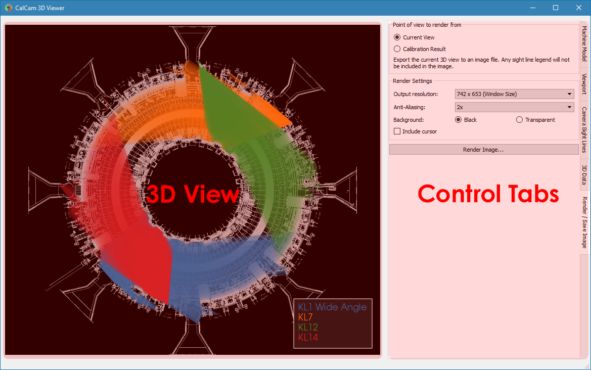

3D Viewer¶
The Calcam 3D viewer can be used for visualising machine CAD models, camera positions and fields-of-view, and for creating high quality figures. As with the other Calcam GUI tools, the window consists of the 3D view on the left of the window and controls on tabs to the right:
CAD Model Setup¶
At the top the Machine Model control tab are controls for loading a CAD model to calibrate against. Two dropdown boxes are provided to select the CAD model to load and the model variant. The Load button to the right of the model variant then loads the model. Underneath the model variant dropdown box is a checkbox labeled Enable default model features on load: if checked, the default parts of the CAD model are all loaded as soon as the model itself is loaded. If not checked, the model definition will be loaded but none of the 3D mesh data will be loaded, and instead you can turn on features individually. This is useful if working with a large model on a slow computer where you don’t want to wait for the whole model to load if not needed. You can change to a different CAD model or variant at any time by selecting a different item from the dropdown boxes and clicking Load again.
Turning CAD model parts On/Off¶
For CAD models composed of multiple parts in separate mesh files, individual mesh files can be turned on or off by ticking/unticking them in the Enable / Disable Features panel. This can be done for individual parts, groups of parts (if defined in the CAD model) or the entire model. This can be helpful to improve performance when working with large models if not all parts are necessary for a particular calibration, or for removing parts which are in the way and make the calibration more difficult.
CAD model appearance settings¶
The CAD model apprearance can be highly customised in order to create figures as desired. These options are in the Appearance box on the Machine Model control tab. This box contains controls to change the model appearance between solid body and wireframe / edges only. The colour of individual model feature(s) can also be changed by selecting the feature(s) in the Enable / Disable Features panel, and using the buttons in the Appearance box to change the part colour or reset it to the default value. You can also save the current colour configuration to be the default in the model definition by clicking Save current colours as default (whole model).
Wall contour display¶
If the CAD model dfinition includes an \((R,Z)\) wall contour, this can be displayed using the controls in the Show R,Z Wall Contour box. Here you can select between not showing the wall contour, showing it as a line at the toroidal position of the cursor, or revolving the R,Z contour in 3D to show a simplified, toroidally symmetric wall shape.
3D Viewport Setup¶
In addition to the mouse controls, the 3D Viewport tab can be used to control the current view of the CAD model. In addition, this tab contains settings for the mouse controls and other options which can be used to change the rendering settings to adjust the appaerance of the model.
Rendering Settings¶
At the top of the 3D Viewport tab are settings which control the rendering style. The 3D Projection options allow switching between a perspective projection view of the model and an orthographic view (where objects appear the same size regardless of their distance from the viewier). This can be helpful for making e.g. cross-section figures.
In the Cross-Sectioning box are options which allow the CAD model to be cross-sectioned in the view. If there is a cursor placed, the cross-section can be set to either cut through the cursor or through the origin. Cross-sectioning is turned on and off using the checkbox on the left of these options. Note: cross-sectioning is implemented by adjusting the clipping planes of the 3D rendering, so the cross-section is always cut in a plane whose normal is the viewing direction.
Viewport Adjustment¶
In addition to using mouse navigation, the current view of the CAD model can be adjusted with the controls in this tab.
In the Select pre-defined viewport box is a list of viewports defined in the CAD model definition. Clicking on a view in this pane immediately changes the CAD viewport to that view. In addition there are two Auto Cross-Sections views which will position the camera and set cross-sectioning options to view the entire model, cut in cross-section through the origin.
You can also set the view to match a calibration by clicking the Add from calibration(s)... button below the viewport list. You can then select one or more Calcam calibration files to load, and the views defined by the calibration will be added to the viewport list on the 3D Viewport tab.
If you want to save the current view of the CAD model in to the model definition so you can easily return to it, enter a name in the Name box under the heading Save current view as preset and click Save. The view will then be added to the viewport list, and if the model definition file you are using is not read-only, will be saved to the model definition for future use.
Near the bottom of the tab are editable boxes showing the current viewport’s camera position, camera view target, field of view and roll. These update automatically to reflect the current viewport, or editing the values in these boxes will immediately adjust the view accordingly.
Visualising calibrated FoVs¶
Calcam calibration files can be loaded by the 3D viewer to visualise the camera sight-lines / fields of view on the 3D model. This is done on the Calibrations tab: click the Add... button to browse for a calibration file to load. The calibration will be added to the list at the top of the tab, and the tick-box next to the calibration name can be used to turn it on or off in the 3D view. To change the displayed name of a loaded calibration, single-click the calibration name in the list box to edit the name.
Visualisation options¶
With a loaded calibration in the list selected, at the bottom of the tab are options for how to visualise the calibrated field of view. There are 3 ways to display fields of view:
- Shaded volume (default) displays the sight-line cone of the camera as a semi-transparent volume.
- Sight-line fan displays an array of lines representing the camera lines-of-sight.
- CAD model shading shades the surface of the CAD model where it can be seen by the camera.
Note
Since the CAD model shading display option requires raycasting calculations at much higher resolution than the other two display options, when changing to this display option it may be relatively slow for the calculation to complete.
You can choose the colour the current calibration is displayed in using the Choose... button below thw visualisation options, and a slider at the bottom is used to adjust the transparency of the field of view display.
The names of the calibrations corresponding to each colour field-of-view visualisation can be displayed in a legend on the image by ticking the Show in legend box underneath the view list. By default this is automatically enabled if more than one calibration is loaded.
Displaying arbitrary 3D Data¶
In addition to showing camera fields-of-view, additional arbitrary 3D points and lines can be added to the visualisation, e.g. representing other diagnostic sight-lines, trajectories, magnetic field lines, flux surfaces or other 3D coordinates of interest. This is done by loading text files containing the 3D coordinates to display on the 3D Data tab.
Preparation of data files¶
3D coordinate data to visualise are loaded from text files with .txt, .csv or .dat file extensions. The data can be in either cartesian (\(X,Y,Z\)) or cylindrical (\(R,Z,\phi\) with \(\phi\) in radians) coordinates.
The data files can take one of two formats, depending on whether you want to display a single continuous line defined by a set of 3D points, a set of individual points, or a collection of individual disconnected straight line segments:
- To display a single continuous 3D line, and/or a set of points, the file should contain a list of 3D coordinates, with each coordinate taking up one line of the text file. Each line of the file must therefore contain 3 numbers, delimited with commas, spaces or tabs.
- If you wish to display a set of disconnected 3D line segments, each line of the file must contain 6 numbers: the 3D coordinates for the start of the line segment followed by the 3D coordinates for the end of the line segment (again all delimited with commas, spaces or tabs).
Loading and removing data¶
Click the Load from ASCII... button to browse for a text file to load. Once selected, a dialog box will appear confirming the number of points or line segments found in the file, and asking whether the data are in cartesian or cylindircl coorinates. It also allows you to select whether you want to display the data as points and/or lines, although this can also be changed later.
Once loaded, data sets are added to the list at the top of the tab, with names corresponding to the file name they were loaded from. The display of each data set can be turned on and off using the checkboxes next to the dataset names. To edit the name of a data set, single click its name in the list.
Appearance Options¶
The 3D data can be displayed as solid lines and/or spheres at each point in the data. With a data set selected from the list, options to turn on or off the lines and points for that data set, and change the line thickness, sphere marker size and colour are in the Appearance options at the bottom of the tab. Legend entries can also be shown for the loaded data sets, which can be turned on and off with the Show in legend checkbox below the list of loaded data sets.
Rendering and saving images¶
The 3D viewer can be used to save high resolution PNG images using the controls on the Render / Save Image tab. At the top of this tab are the 3 main options for the types of image which can be saved:
Exporting the current view¶
If Current View is selected at the top of the Render / Save Image tab, the output image will exactly match what is currently displayed in the 3D view in the window. This can be used to prepare illustrative figures. By default the output image size in pixels will match the size of the window on the screen, however you can choose to render the output at higher resolution with the Output resolution dropdown box in the Render Settings box. Here you can also change the level of anti-aliasing to eliminate sharp edges in the rendered image, which is implemented by rendering the output at higher resolution than desired and then down-sampling again. You can also choose whether to use a black background, as in the display window, or to make any black areas of the image transparent in the output image. If there is a cursor placed in the current view, you can choose whether or not to show the cursor on the output image.
Rendering calibrated camera views¶
The tool can also be used to render the CAD model, in the current configuration set up in the window, from the point of view of a calibrated camera. This will exactly match the position, orientation, focal length and distortion of the calibrated camera, so the rendered image should exactly match with real camera images to within the accuracy of the calibration.
This is done by selecting Calibration Result at the top of the Render / Save Image tab. Then, click the Select... button in the Render Settings box to browse for a calibration file to use. You can then choose whether the output image should be in original or display orientation for the camera, and the output pixel resolution if you wish to render at a higher resolution than the real camera. In the Render Settings box you can also change the level of anti-aliasing to eliminate sharp edges in the rendered image, which is implemented by rendering the output at higher resolution than desired and then down-sampling again. You can also choose whether to use a black background, as in the display window, or to make any black areas of the image transparent in the output image. If there is a cursor placed in the current view, you can choose whether or not to show the cursor on the output image. Note: If there is a sight-line legend displayed, this will not be included in the output image.
Rendering an un-folded first wall view¶
It may be useful to have an overview image of the first wall of the device, showing the entire wall in a single image. This can be done using the Unfolded first wall option at the top of the Render / Save Image tab. This option is only enabled for CAD models which include an \(R,Z\) wall contour (see R,Z Wall Contour for how to add this to to the CAD model).
The output of this type of render is an image of the first wall where toroidal angle increases along the horizontal direction of the image and poloidal angle increases in the vertical direction of the image. This can be useful e.g. in combination with fields of view shown as CAD model shading, to visualise camera coverage of the device first wall.
Note
For rendering an un-folded first wall view with wall shading to represent camera fields of view, the function calcam.render_unfolded_wall() will usually produce better quality results than using the 3D Viewer GUI.
When the above settings are set as desired, click the Render Image... button to save an image file.